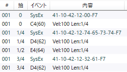

SysExプレフィクス
MIDI整理において、同一性判定に含めたいシステムエクスクルーシブメッセージを設定する機能です。
説明
要素をクリックすると説明が表示されます。- SysExプレフィクスは、特定種類のメッセージをコントロールチェンジと同じように扱い、「MIDI整理」における同一性判定に影響するようにします。
-
同じプレフィクス(前方一致)を持つSysExは、それぞれ同じ種類のコントロールチェンジとみなされます。
-
例: プレフィクス41-10-45-12が登録されている場合
- SysEx41-10-45-12-10-01やSysEx41-10-45-12-16-01が、同じ「種類」(41-10-45-12)で異なる「値」(10-01や16-01)のコントロールチェンジとみなされます。
-
例: プレフィクス41-10-45-12が登録されている場合
-
これらは次に同じ「種類」のSysExが来るまで持続し、異なる「値」が適用されていれば同じノートも異なる判定となります。
-
例えば以下のような並びである場合、BmsMaker3は以下のように判断します。
- 1つ目のノート(C4)には種類41-10-42-12のSysExが値00-F7として適用されている。
- 2つ目(D4)及び3つ目(E4)には同じ種類のSysExが値74-65-73-74-F7として適用されている。
- 4つ目のノート(D4)には同じ種類のSysExが値32-61-F7として適用されている。
- 2つ目と4つ目は同じ音高(D4)、ベロシティ(100)、長さ(1/4)であるが、適用されているSysExの値が異なるため、MIDI整理においては異なるノートとして扱われる。
-
例えば以下のような並びである場合、BmsMaker3は以下のように判断します。